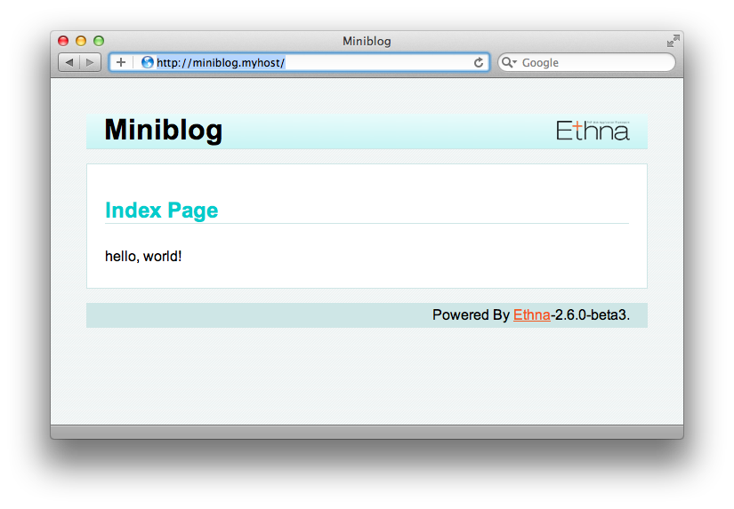

Ethna でアプリケーションを作成するには、まず プロジェクト を作成します。
チュートリアルに入る前に、どのようなアプリケーションを作成するかを決めておきます。
今回は、「コメントを入力して一欄に表示する」というひとことブログを実装することを目標とします。このチュートリアルを通じて、
を理解しましょう。
アプリケーションを構築する前に、少なくとも以下の 2 点を決定しておく必要があります。
アプリケーションID(英字のみ)
例: Miniblog
アプリケーション配置ディレクトリ (どこでも構いません)
例: /var/www/ とか C:\codes\php\ など。
このチュートリアルでは、 /var/www/ を用います。
ethna コマンドを利用してアプリケーションを使って生成します。
アプリケーションIDが miniblog 、アプリケーション配置ディレクトリが /var/www とすると、次のように add-project コマンドを使ってアプリケーションの雛形を自動的に生成することができます。 [1]
add-project コマンドを利用すると、アプリケーションIDに指定した名前でディレクトリが自動的に作成されます。:
$ cd /var/www
$ ethna add-project miniblog
creating directory (/var/www/miniblog) [y/n]: y
project sub directory created [/var/www/miniblog/app]
project sub directory created [/var/www/miniblog/app/action]
...
file generated [/usr/share/php/Ethna/skel/skel.view_test.php -> /var/www/miniblog/skel/skel.view_test.php]
project skelton for [miniblog] is successfully generated at [/var/www/miniblog]
以上で、最小構成のアプリケーションが生成されます。
生成されたディレクトリをのぞいてみましょう。次のような構成となっています。(一部抜粋)
|-- app (アプリケーションのディレクトリ)
| |-- action (アクションスクリプト)
| |-- plugin (フィルタスクリプト)
| |-- test (テストスクリプト)
| `-- view (ビュースクリプト)
|-- bin (コマンドラインスクリプト)
|-- etc (設定ファイル等)
|-- lib (アプリケーションのライブラリ)
|-- locale
| `-- ja_JP
|-- log (ログファイル)
|-- schema (DBスキーマ等)
|-- skel (アプリケーション用スケルトンファイル)
|-- template
| `-- ja_JP (テンプレートファイル)
|-- tmp (一時ファイル)
`-- www (ウェブ公開用ファイル)
よく使うのは下記のディレクトリです。
生成したアプリケーションにアクセスするには、 www ディレクトリを、ウェブサーバを通じてアクセス可能にするか、シンボリックリンクを作成します。
今回は、 Apache の VirtualHost を設定し、 http://miniblog.myhost/ でアクセスできるようにしてみましょう。 [2] 今回のアプリケーションは /var/www/miniblog に構築しているため、 DocumentRoot は /var/www/miniblog/www となります。
# VirtualHost の設定の例
<VirtualHost *:80>
ServerName miniblog.myhost
DocumentRoot /var/www/miniblog/www
</VirtualHost>
以上で設定は完了です。さっそくブラウザでアクセスしてみましょう。
http://miniblog.myhost/
正しく設定ができていれば、以下のような画面が表示されます。
さて、実際のアプリケーションの実装に入る前に、 ethna コマンドを用いてアクション・ビュー・テンプレートを作成し、処理の流れを追ってみましょう。
2. アクション、ビュー、テンプレートの作成と処理の流れ に進んでください。